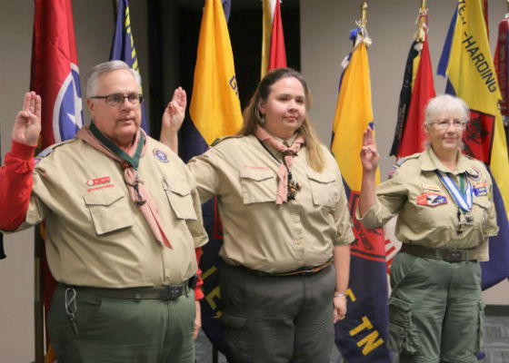

My Story
I enjoy serving the community of Middle Tennessee through volunteering with Boy Scouts of America. When I am not working, I can usually be found at a Cub Scout or Boy Scout event or meeting.
My career in the mortgage industry started 15 years ago. I soon discovered my focus on detail was an asset in the mortgage business. I have enjoyed helping loan officers by preparing their loans so that they could be closed on time.
My hobbies include hiking, scouting, crafting, and reading.
If you are looking for a proven leader, please contact me at susan.murrell@ymail.com.
Photos from my volunteer activities:
